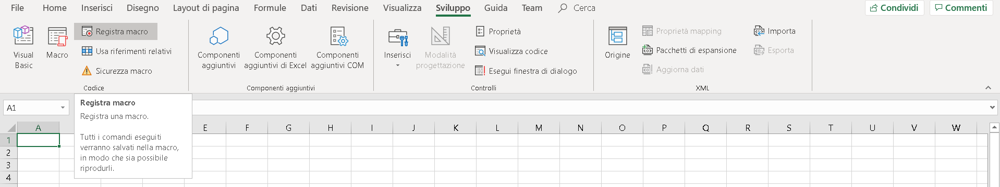
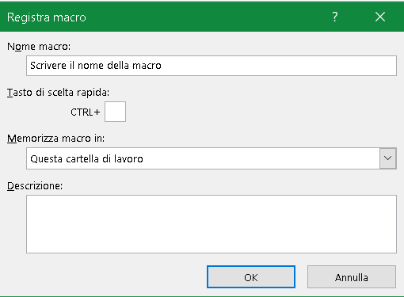
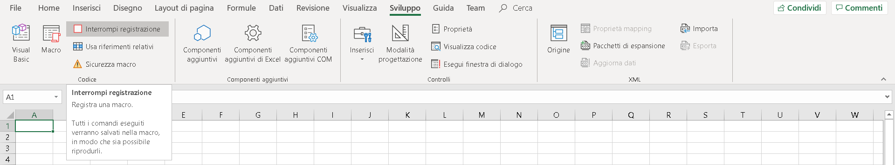
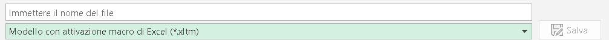

Inserire la scheda di Sviluppo
Per inserire la scheda Sviluppo in Excel, sulla barra multifunzione, ti basterà posizionarti sulla scheda File, della barra multifunzione e, nella barra laterale di sinistra, cliccare sul comando Opzioni. Nella finestra di dialogo che si apre vai sulla voce Personalizzazione barra multifunzione. Nel riquadro di sinistro, nel menu a tendina Scegli comandi da, scegli la voce Tutte le schede. Seleziona Sviluppo,in Schede principali, e assicurati che, nel riquadro di destra, nel menu a tendina di Personalizza barra multifunzione, sia presente la voce Schede principali.
Utilità di una MACRO
Ci si trova spesso a dover ripetere sempre le stesse operazioni prima di poter analizzare un set di dati o a dover utilizzare procedure per avere il formato delle variabili come ci è più comodo. Queste operazioni di solito sono lunghe, semplici ma se ci si dimentica di fare qualcosa poi ci sono degli errori e bisogna ripetere tutto. In questi casi ci viene in aiuto Excel creando la possibilità di fare delle macro, ossia registrare determinate azioni per poi poterle ripetere attraverso una combinazioni di tasti (ctrl +) o attraverso l'utilizzo di un pulsante.
Creare una MACRO
- Dalla scheda "Sviluppo" clicca su pulsante "Registra macro"

- Dalla finestra di dialogo "registra macro", nella casella "Nome macro" scrivere il nome con il quale si vuole chiamare la macro e, se si vuole, si può assegnare una combinazione di tasti (ctrl+...) per richiamare più velocemente la funzione.

- Eseguire le azioni che vogliamo inserire nella macro
...
...
...
...
- Clicca sul comando "Interrompi registrazione", per terminate la Macro.

Esempio MACRO
Personalmente io preferisco sempre programmare le macro con VBA come si vedrà nella prossima sezione ma un esempio di un problema con cui alcune volte mi sono dovuto cimentare consiste nel togliere da un foglio di calcolo i riferimenti. Questo problema di per se non è un problema difficile, anzi, basta selezionare tutto (Ctrl + A) e poi reincollare per valori, SEMPLICE!
In realtà ci sono alcune insidie quando ci si trova a lavorare con tanti formati differenti tipo date (che nel copia e incolla per valori perdono il formato e poi devi riaggiustare il formato colonna per colonna) o con una combianzione di un grande dataset, che sarebbe meglio non gestire in Excel, e un computer non molto potente, in questi casi il computer può crashare e Excel bloccarsi oppure ti dice che la selezione da copiare è troppo grande.
Quindi la soluzione che in questo caso può essere utilizzata è copiare e incollare per valori solo le colonne che mi interessano e quando è oppurtuno, tipo per le date, predisporre gia il cambio di formato.
Manualmente dovrei fare:
- Seleziono la cella ad apice del mio foglio di calcolo
- Selezionare l'intera colonna (Ctrl + maiusc + freccia in basso)
- Copiarla (Ctrl + c)
- Incollarla per valori (che non ha uno shortcut [anche se si può installare da internet o creare in vba come di vedrà nella sezione successiva])
- Cambiargi formato
5 comandi per un totale di circa 3/5 minuti li faremo diventare secondi!
- Iniziamo selezionando la cella ad apice della colonna da cui vogliamo togliere i collegamenti (attenzione da fare prima di aprire la registrazione della macro)
- Procidiamo aprendo la registrazione di una macro, dantogli un nome e uno shrtcut che reputiamo comodo. (Una volta aperta la registrazione dobbiamo stare attenti a non fare errori perchè poi il computer li ripete)
- Ci troviamo già nella cella ad apice, quindi clicchiamo Ctrl + [Maiusc] + [freccia giù] per selezionare l'intera colonna
- La copiamo con Ctrl + c
- Poi clicchiamo su
Home >Incolla >Incolla speciale >Incolla Valori per togliere i collegamenti
- Cambiamo il formato della colonna in base alle esigenze
- Ed infine clicca sul comando "Interrompi registrazione", per terminate la Macro.
Una volte eseguite queste operazioni cosi come descritte avremo una macro collegata con lo shortcut che gli abbiamo dato.
Codice VBA della macro:
Sub Macro1()
'
' Macro1 Macro
' Macro di prova
'
' Scelta rapida da tastiera: CTRL+g
'
Range(Selection, Selection.End(xlDown)).Select
Selection.Copy
Selection.PasteSpecial Paste:=xlPasteValues, Operation:=xlNone, SkipBlanks _
:=False, Transpose:=False
Application.CutCopyMode = False
Selection.NumberFormat = "m/d/yyyy"
End Sub
Per l'interpretazione del codice VBA della macro si lascia al capitolo successivo.
Salvare file Excel con macro
Per salvare un file excel con l'utilizzo delle macro è necessario salvarlo con nome nel formato Cartella di lavoro con attivazione di macro ossia .xlsm:
